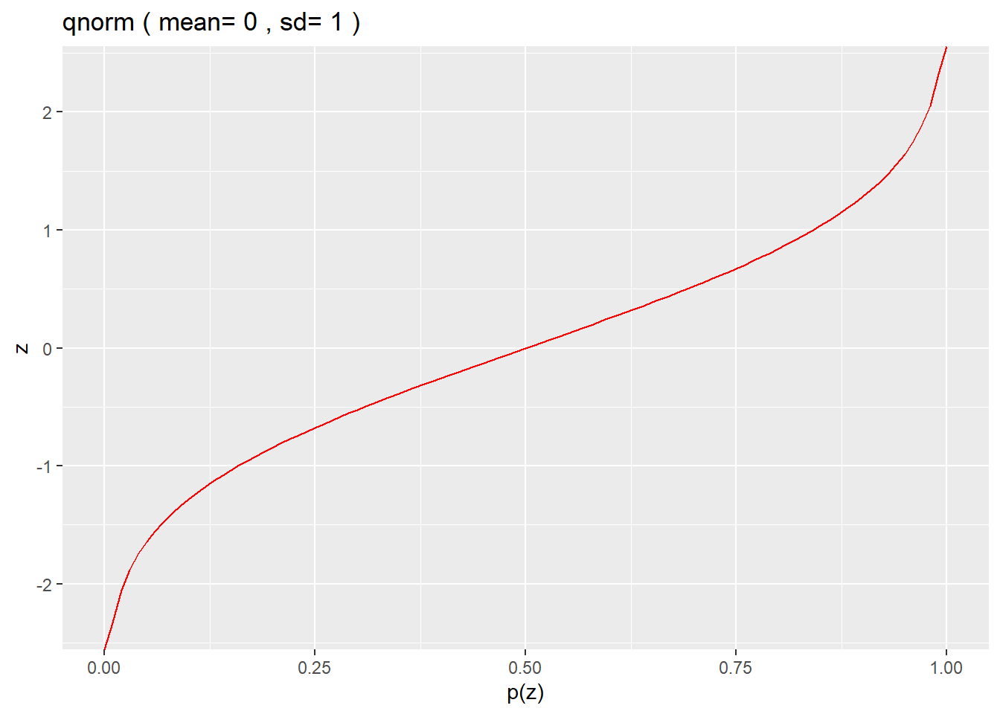

Chapter 15 Statistics for Categorical Data
library(PropCIs)
library(tidyverse)
library(binom)
library(pwr)
library(statmod)
library(EMT)Biomedical research is full of studies that count discrete events.
A common mistake made by many researchers is to use statistics designed for measured variables on discrete count variables. For example, they transform count data into scaler measures (eg, percents, folds etc) and then apply statistics designed for continuous variables to events that are fundamentally discrete by nature. The problem with that is there are inherent differences in the behaviors of continuous and discrete variables. Therefore, it is important to recognize that there are statistical tests that can be used to analayze discrete data directly, without resorting to these transformations.
15.1 Types of categorical data
What proportion of cells express a specific antigen and does an experimental treatment cause that proportion to change? What proportion of rats treated with an anxiolytic drug choose one chamber over others in a maze test? How many people who express a certain marker go on to have cancer?
In these three scenarios the primary data are counts. All of the study results have integer values. The counts are categorized with variable attributes, thus they are called categorical data.
In fact, the three scenarios above are very different experimental designs. The first represent experiments that compare simple proportions. The second compare freqeuncies, and the third is an association study. The analysis of these require using a common suite of statistical tools in slightly different ways.
Broadly, all of these tools boil down to dealing with proportions. A few types of proportions (eg, odds ratio, relative risk) that can be calculated from these datasets are sometimes used as effect size parameters. Other times we’d use a confidence interval as a way of conveying an effect size. Statistical tests are then used to evaluate whether these effect sizes, or frequencies, or simple proportions, are extreme enough relative to null counterparts so that we can conclude the experimental variable had some sort of effect.
15.1.1 Proportions
We might…
Inactivate a gene hypothesized to function in the reproductive pathway. To test it, mating triangles would be set up to count the number of female mice that become pregnant or not.
Implant a tumor in mice, before counting the number of survivors and non-survivors at a given point later.
Mutate a protein that we hypothesize moves in and out of an intracellular compartment, before staining cells to count the number of cells where it is and is not located in a compartment of interest.
Each of the examples above have binomial outcomes…pregnant vs not, dead vs alive, or inside vs outside.
In each case above, both the succesful and the failed events are counted in the experiment. A proportion is a simple ratio of counts of success to counts of failures.
15.1.2 Frequencies
Other kinds of counted data occur randomly in space and time. The examples below illustrate this. Note how only the number of events are recorded, rather than categorizing them as successes or failures. These counts therefore have the statistical property of frequency, such as counts per time or counts per volume or counts per area.
We can…
Expose a neuron to an excitatory neurotransmitter, then count the number of times it depolarizes over a given period of time.
In a model of asthma, count the number of immune cells that are washed out in a pulmonary lavage protocol after an immunosuppressive agent.
The key difference for these compared to binomial events is that their non-event counterparts are meaningless. For example, it is not possible to measure the number of depolarizations that don’t occur, or know the number of immune cells that don’t wash out in the lavage.
15.1.3 Associations
Lastly, the examples below illustrate the design of association studies, which are based upon, according to the null hypothesis, independent predictors and outcomes.
Here are some examples of association study designs:
You might wish to
identify causal alleles associated with a specific disease phenotype by counting the number of people with and without the disease, who have or don’t have a particular allelic variant.
determine if a history of exposure to certain carcinogens is associated with a higher risk of cancer by counting people with cancer who have been exposed.
know if a drug treatment causes a higher than expected frequency of a side-effect by counting the people on the drug with the side-effect.
In the simplest (and most general) case, association studies are 2X2 in design: A predictor is either present or absent as the row factor, and an outcome was either a success for a failure as the column factor. Subjects are categorized into groups on the basis of where they fall in the 4 possible combinations that such 2X2’s allow for.
It should be noted that higher order association studies are also possible, which can be either symmetric (eg, 3x3) or non-symmetric (eg,) 9X2, 2x3, and so on.
15.1.4 Statistics Covered Here
- Confidence intervals of proportions
- One-sample proportions test
- Two-sample proportions test
- Goodness of fit tests
- Tests of associations
- Power analysis of proportions (including Monte Carlo simulation)
- Plotting proportions with ggplot2
15.2 Exact v Asymptotic Calculations of p-values
The statistical tests for hypotheses on categorical data fall into two broad categories: exact tests (binom.test, fisher.test, multinomial.test) and asymptotic tests (prop.test, chisq.test).
Exact tests calculate exact p-values. That’s made possible using factorial math. The prop.test and chisq.test generate asymptotic (aka, approximate) p-values. They calculate a \(\chi^2\) test statistic from the data before mapping it to a \(\chi^2\) probability density function. Because that function is continuous, the p-values it generates are asymptotically-estimated, rather than exactly calculated.
15.2.1 Choosing exact or asymptotic
As a general rule, given the same datasets and arguments, exact and approximate hypothesis test functions will almost always give you p-values that differ, but only slightly.
That’s usually not a problem unless you’re near a threshold value. Typically, an integrity crisis is evoked when that happens: “Which is”right???" Do you p-hack and choose the favorable one or not?
You should use the test you said you’d use when you first designed the experiment. And if you didn’t pre-plan…or at least have some idea about where you are going…recognize that the exact tests are more accurate.
Another issue that arises is how well the tests perform with low count numbers. For example, as a rule of thumb, avoid using the chisq.test when the data have counts less than 5 in more than 20% of the cells because the accuracy of the chisq.test is less at low cell counts. Use an exact test instead.
15.3 Overview of the types of hypothesis testing
We’ll go through each below in more detail, emphasizing practical experimental design and interpretation principles.
15.3.1 Proportion analysis
You can learn a lot about experimental statistics by thinking about proportions. So a lot of time is spent on it. Proportions are derived from events that can be classified as either successes or failures. Sometimes we want to compare simple proportions to decide if they are the same or not.
15.3.2 Goodness of fit testing
We do this when we want to compare the frequency distribution we observe in an experiment to the null expectation for that frequency distribution.
15.3.3 Contingency Analysis
Contingency analysis, otherwise known as tests of independence, are very different from goodness-of-fit test and simple proportion tests, in design and in purpose. They allow us to ask if two (or more) variables are associated with each other. Unlike a lot of the statistics we’ll deal with, there is a hint of a predictive element associated with these types of studies because the effect sizes we use to explain their results are related to odds and risk and likelihood. Which is not to say that we couldn’t use the same predictive concepts in proportions and goodness of fit testing.
Contingency tests are very common in epidemiology and in clinical science. You recognize by their names as cohort studies, case control studies, and so forth.
15.4 Comparing proportions
In their simplest use, the tests here can be used to compare one proportion to another. Is the proportion of successes to failures that results from a treatment different from the proportion that results from control? We’ll dive into this further below.
15.4.1 A Mouse T Cell Pilot Experiment: The Cytokine-inducible antigen gradstudin
Let’s imagine a small pilot experiment to see how a cytokine affects T cells. This is a very crude experiment designed mostly to illustrate some principles.
A cytokine is injected into a single mouse. There is no control injection, just one mouse/one cytokine injection. A time later, blood is harvested from the mouse to measure an antigen on T cells. Let’s call the antigen gradstudin.
Assume a method exists to detect T cells in the sample that express gradstudin and don’t express gradstudin.
That method implies some nominal criteria are established to categorize T cells as either expressing gradstudin or not. FACS machines are very useful for this. The machine typically produces continuous fluorescent data, where intensity is proportional to gradstudin levels. But we don’t care about the magnitude of the expression level, we just care whether it is there or not.
Based upon our scientific expertise, we establish cutoff gating criteria above which fluoresence == gradstudin is present.
The machine therefore returns simple counts of both gradstudin-positive and gradstudin-negative cells.
15.4.2 Calculating Proportions
Here’s the data, counts of cells expressing and not expressing gradstudin. It is a very simple dataset:
pos <- 5042
neg <- 18492A proportion is the count of a particular outcome relative to the total number of events. It’s customary to use the number of successes as the numerator. Whereas its customary to refer to the total number of events, n, as the trial number rather than as sample size, but they mean the same thing.
n <- pos+neg #trial size
prop <- pos/n
prop## [1] 0.214243215.4.3 What A Proportion Estimates
This sample proportion is descriptive statistic. It serves as a point estimate of the true proportion of the population we sampled. The only way to know the true proportion would be to count every T cell in every drop of the subjects blood!
This point estimate is statistically valid if our sample meets two conditions. First, that this is a random sample of the T cells in the subject’s blood. Second, if we consider every T cell in the sample as statistically independent of every other T cell.
We can safely assume those conditions are met. Strictly, as an estimate this proportion only infers the population of blood borne T cells in that one subject. We really can’t generalize much further than that, including the composition of T cells in sequesterd compartments (thymus, nodes, etc).
Which is fine for our purposes now because we’re trying to keep this simple.
15.4.4 Confidence Intervals of Proportions
Confidence intervals (CI) have features of both descriptive and inferential statistics.
15.4.4.1 Definition of a 95% CI
The 95% CI for a sample proportion represents a range of proportions within which 95% of the time we would expect the true population proportion.
There’s a lot going on there.
The value of the proportion we measured in the sample is a mathematical fact that is not in dispute. It is what it is. The question is, what does it represent?
Although there might be some error associated with measuring it, our single sample offers no real information about what that error might be. As an n=1 sample, there is no variation!
What is unknown is the true proportion of gradstudin+ T cells in the population we sampled.
CI’s are designed to give us some insights into that unknown.
95% CI’s are a range estimate of what that true population proportion might be. CI’s are calculated in part upon the quality of the point estimate. In the case of proportions, the quality of the point estimate is driven by the size of the sample, the number of counts that are involved in calculating the proportion.
As you might imagine intuitively, the more counts we have in the sample, the more confidence we should have that our proportion provides a good estimate of the population’s proportion.
15.4.4.2 Calculating CI with R
The PropCIs package offers several ways to calculate a CI. Because of that, when publishing it is important is to state which CI method is used.
Is one better than the other? Sometimes, yes. For now, let’s not worry about that. Wilson’s score interval with continuity correction] is suggested as the most accurate for proportions.
Other methods are more commonly used than Wilson’s because they gained traction as being easier to compute by hand, and old habits die slowly.
Taking the data on cytokine induced gradstudin+ T cells, the chunk below illustrates how to use PropCIs to derive a Wilscon score interval-based 95% CI:
scoreci(pos, n, conf.level=0.95)##
##
##
## data:
##
## 95 percent confidence interval:
## 0.2090 0.219515.4.4.3 Interpretation of a CI
The value of our sample proportion, 0.214, falls within this 95% CI. That’s not a big surprise, given the 95% CI was calculated from our proportion!
On the basis of the sample proportion, we can conclude from this CI that there is a 95% chance the true proportion of gradstudin positive T cells falls within this very narrow range.
15.4.4.4 Using the CI as a quick test of statistical significance.
Let’s say, for example, that we have tremendous experience and great scientific reason to expect to see under normal conditions that only 15% of T cells would be gradstudin-positive normally. Does our sample proportion differ from that expectation?
Since a proportion of 0.15 is not within the 95% CI calculated above, we can conclude that the cytokine-induced sample proportion differs from this expectation at the 5% level of statistical significance.
We just did a statistical test, without running any software (sorta) or generating any p-values!! And it is perfectly valid inference.
15.4.5 A One-Sample Proportion Test
We’ll use prop.test to run a test that generates a p-value to decide if the sample proportion we have above differs from 0.15.
15.4.5.1 Hypothesis Tested in a One-Sample Proportion Test
In this test the sample antigen-positive proportion is compared to a theoretical proportion. If the typical proportion of antigen-positive T cells within a blood sample is 15%, is the result after cytokine treatment different from this proportion?
Let’s say that our scientific hypothesis going into all this is that the cytokine induces the antigen on T cells. Since we are predicting an increase, we should establish a one-sided alternative (thus using greater as an argument in prop.test below) as our statistical hypothesis.
Our statistical hypothesis is the null. We’ll decide whether or not to reject the null on the basis of the test results. Philosophically, we’re using a falsification method.
The statistical alternate hypothesis: \(\pi>15\%\)
The statistical null hypothesis: \(\pi\le15\%\)
We use Greek notation to represent the ‘true’ population proportion. This reminds us that a statistical hypothesis is an inferential test about the population proportion.
Again, there is no question that the sample proportion differs from a proportion of 15%. 21% != 15%. That’s a simple numerical fact. Statistical tests are not necessary to make that assertion.
On the basis of the sample proportion p, we’d like to draw inference on the composition of all of the T cells in the blood of the subject. Thus, the sample p is only an estimate of a true \(\pi\) (which we notate using Greek letters).
Statistical testing allows us to generate some insight into the reliability of our estimate.
The chunk below lays out these arguments using R’s prop.test function:
#pos and n in the test arguments are objects that were defined above!
prop.test(
pos, n, p=0.15,
alternative = "greater",
conf.level = 0.95,
correct = TRUE
)##
## 1-sample proportions test with continuity correction
##
## data: pos out of n, null probability 0.15
## X-squared = 761.29, df = 1, p-value < 2.2e-16
## alternative hypothesis: true p is greater than 0.15
## 95 percent confidence interval:
## 0.2098559 1.0000000
## sample estimates:
## p
## 0.214243215.4.5.2 Interpreting one-sample prop.test output
Like all statistical tests, this one is evaluated under the assumption that the null hypothesis is true. We use the test outcome to decide whether the null hypothesis should be rejected.
The prop.test conducts a chi-square analysis. The value of \(\chi^2\) for this sample is very large.
The p-value represents the probability of obtaining a \(\chi^2\) value as larger or larger then what is calculated from our sample.
If the null hypothesis is true in this case, the probability of a \(\chi^2\) value as large or larger than we obtained is 2.2e-16, which is very, very low.
The 95% CI is 0.2098 to 1.0. There is a 95% chance the population proportion is greater than 0.2098. The reason it differs from the Wilson’s CI calculated above is that we used greateras a one-sided hypothesis argument in the prop.test. These CI’s from one-sided hypothesis tests are not particularly useful when attempting to use the CI as an index of accuracy.
15.4.5.3 How to write this up
The proportion of gradstudin positive T cells after cytokine treatment in the subject differs from an expected value of 0.15 (one-sided one-sample proportions test, p-value=2.2e-16, 95% CI = 0.209 to 1.0)
Notice how I didn’t say “significantly” or “statistically significantly” or some such. Whether an outcome is signficant or not should be a scientific assertion, rather than statistical.
15.4.5.4 An exact test for one proportion
R’s binom.test function is an exact test for whether a proportion differs from a theoretical expectation. It compares proportions using an entirely different procedure.
As a one-proportion test the binom.test gives an exact p-value derived from the binomial distribution, whereas the prop.test gives approximate p-values because it uses the chi-square distribution.
That distinction is hard to see with our examples here, but the differences will become more noticable when analyzing samples with far fewer events.
Here’s the binomial test run on two different proportions. In each, the test is comparing the experimental proportion to the proportion value of 0.15.
binom.test(pos, n, p=0.15)##
## Exact binomial test
##
## data: pos and n
## number of successes = 5042, number of trials = 23534, p-value <
## 2.2e-16
## alternative hypothesis: true probability of success is not equal to 0.15
## 95 percent confidence interval:
## 0.2090155 0.2195416
## sample estimates:
## probability of success
## 0.2142432binom.test(x=567, n=1778, p=0.15)##
## Exact binomial test
##
## data: 567 and 1778
## number of successes = 567, number of trials = 1778, p-value <
## 2.2e-16
## alternative hypothesis: true probability of success is not equal to 0.15
## 95 percent confidence interval:
## 0.2972673 0.3411272
## sample estimates:
## probability of success
## 0.318897615.4.6 Comparing Two Proportions
We can stick with the T cell-cytokine-gradstudin scenario, but let’s change up the experiment a tad.
Let’s imagine we’ve withdrawn a sample of blood from a subject and enriched for T cells. Half of the sample is exposed in vitro to a cytokine for a few hours. The other half is exposed to vehicle as a control. We count the gradstudin-positive and gradstudin-negative T cells in both groups.
We now have a predictor group at two levels (treatment = vehicle or cytokine) and an outcome group at two levels (antigen = positive or negative)
15.4.6.1 Hypothesis Tested
Let’s test the hypothesis that the proportion of postive T cells in the two samples differ. The choice is not to test whether one proportion is greater than the other. We just want to know if they differ.
The statistical hypotheses here differs from the one sample hypotheses in two ways.
First, notice how we’re comparing the population proportion of cytokine- to that for vehicle-treatment.
Second, we’re making this a two-tailed (two.sided) test instead of one-tailed (greater).
The statistical alterate hypothesis: \(\pi_c\ne\pi_v\)
The statistical null hypothesis: \(\pi_c=\pi_v\)
A second way of writing these hypotheses to say the same thing:
Alternate: \(\pi_c-\pi_v\ne0\)
Null: \(\pi_c-\pi_v=0\)
15.4.6.2 Running the test
Let’s say that here are the outcome data: gradstudin-positive, gradstudin-negative, total Cytokine-treated: 567, 1211, 1778 Vehicle-treated: 412, 1485, 1897
The data can be dumped directly into prop.test. Normally we’d run this at 0.95 confidence level (type1 error of 5%). Let’s say we have good scientific reasons to run this test at a much more stringet threshold level for type1 error, because we’re really hoping to avoid a false positive:
prop.test(
x=c(567, 412),
n=c(1778, 1897),
conf.level=0.9999999
)##
## 2-sample test for equality of proportions with continuity
## correction
##
## data: c(567, 412) out of c(1778, 1897)
## X-squared = 48.066, df = 1, p-value = 4.121e-12
## alternative hypothesis: two.sided
## 99.99999 percent confidence interval:
## 0.02364902 0.17977620
## sample estimates:
## prop 1 prop 2
## 0.3188976 0.217185015.4.6.3 Interpretion of Two-Sample proportions test output
This test is evaluated under the assumption that the null hypothesis is true. The test results helps us decide whether the null hypothesis should be rejected. We’ll do that if the p-value is less than our type1 error threshold.
The prop.test conducts a chi-square analysis using the Yates continuity correction. This \(\chi^2\) value is very large; extremely large.
The p-value represents the probability of obtaining a \(\chi^2\) value as larger or larger than that by chance. If the null hypothesis is true in this case, the probability of that sized \(\chi^2\) value is 4.12e-12, which is very low, and still much lower than our type1 error threshold.
We can reject the null.
If we subtract prop2 from prop1 we get a value of about 0.1017, as a point estimate for the difference between the two proportions.
The 99.99999% CI for the difference between two proportions does not include the value of 0. Since the 99.99999% CI does not overlap with 0, we can conclude from it alone that there is a difference between the two proportions. Even at this extremely high confidence level!!
15.4.6.4 Write Up
The proportion of gradstudin positive T cells after cytokine differs from that in vehicle treated cells (two-sided two-sample proportions test, p-value=4.12e-12, 99.99999% CI for proportion difference = 0.023 to 0.179)
Note how we don’t say “statistically significantly different”.
Notice also how the 99.99999% CI is very wide. It would be narrower if run at a 95% confidence level. Why?
15.5 Exact tests for two proportions
An alternative to prop.test to compare two proportions is the fisher.test, which like the binom.test calculates exact p-values.
The fisher.test requires that data be input as a matrix or table of the successes and failures, so involves a bit more munging.
We need to make a matrix of the data first, then perform the fisher.test on that matrix: gradstudin-positive, gradstudin-negative, total Cytokine-treated: 567, 1211, 1778 Vehicle-treated: 412, 1485, 1897
Notice below that here we’re entering the successes and the failures in the matrix. We’re tagging the matrix with some dimension names so it doesn’t get confusing.
M <- matrix(
c(567, 412, 1211, 1485),
nrow=2,
dimnames = list(
Treat=c("Cytokine", "Vehicle"),
Antigen=c("Positive", "Negative")
)
)
M## Antigen
## Treat Positive Negative
## Cytokine 567 1211
## Vehicle 412 1485fisher.test(M)##
## Fisher's Exact Test for Count Data
##
## data: M
## p-value = 3.433e-12
## alternative hypothesis: true odds ratio is not equal to 1
## 95 percent confidence interval:
## 1.451760 1.962188
## sample estimates:
## odds ratio
## 1.687312Notice the output differs from the prop.test. In adddition to a p-value, the Fisher test produces an odds ratio and its confidence interval. The p-value leads to the same result and write-up as for the two proportion test. The odds ratio could be interpreted like this:
The cytokine increases the odds of gradstudin+ T cells by 1.687 compared to vehicle treatment (Fisher’s Exact Tet for Count Data, p = 3.433e-12, OR 95% CI = 1.45 to 1.96).
15.6 Goodness of fit Tests
Goodness-of-fit tests are useful for testing hypotheses about patterns of counts in time or space…whether the distribution of their observed frequencies differs from expectations of a null case. In other words, do they occur in a non-random pattern?
There is no independent variable in these tests.
The shape of these datasets is either as 1 row or 1 column, where every cell is a time or space and the cell value is the the number of counts that occured in that time or space.
Either the multinomial.test (for exact p-values) or the chisq.test (for approximate p-values) can be used for Goodness-of-fit testing. The latter is most commonly used.
These designs compare the disribution of events to a hypothetical (or expected) model null distribution of those events.
These expected counts are entered in the test script as a prop or p argument. This can be confusing. It’s important to recognize you should enter a vector of null probabilities in p or prop! Don’t enter the counts you hope to see if the test were positive!!!
Say we had a spatial memory test in which 28 independent subjects are placed into a maze for testing (one at a time) and we count which of 4 chambers they enter first. They do so at the following frequencies: A=14, B=3, C=7, D=4. Does this frequency distribution differ from the null expectation, A=7, B=7, C=7, D=7, where no chamber is more likely to be entered than another?
Failure is not an option in this design! Only successes are counted. Given enough time, a subject will always choose a chamber (iIf one fails the task, it should be censured).
Let’s test this at the 5% type1 error threshold:
15.6.1 An Exact Goodness of Fit test
NB:The multinomial.test function requires you to assert the null frequency distribution explicitly and as fractions whose sum is 1.
x <- c(A=14, B=3, C=7, D=4)
prob <- c(A=.25, B=.25, C=.25, D=.25)
multinomial.test(
x,
prob=prob
)##
## Exact Multinomial Test, distance measure: p
##
## Events pObs p.value
## 4495 1e-04 0.0235Note on the multinomial.testoutput: Please see this site for further information on what is represented by events (its a combination result–a metric of the computation it took to do this) and pObs (its a multinomial probability).
We’re only intersted in the p-value, since we’re using this function as an exact goodness-of-fit hypothesis test for the null hypothesis.
Why use an exact test rather than a chisq.test? Because we have two cells in the dataset with counts < 5! An exact p-value test will be more accurate than chisq.test.
The test compares our sample frequency distribution to that in the null model. We actually wrote the latter explicitly in the function argument: null is uniform distribution–the subjects are equally likely to enter each chamber.
H0: The probability of choice is equal for each chamber. \(\pi_A=\pi_B=\pi_C=\pi_D\) H1: The probability of choice is not equal for each chamber. \(\pi_A\ne\pi_B\ne\pi_C\ne\pi_D\)
(Note: this is an omnibus test. It doesn’t explicity tell us which chambers are preferred by the subjects.)
Because the p-value is less than 0.05, we reject the null hypothesis and conclude that the chamber choice is not equitable across the four options.
15.6.1.1 Write up
In a 4 chamber maze test, the subjects displayed a clear, non-uniform chamber preference (Exact Multinomial Test, n=28, p=0.0235) Note how this implies the null hypothesis.
15.6.2 An Approximate Goodness of Fit test
The \(\chi^2\) test of the same data is really simple to execute. It offers the same conclusion, but note how the p-value is very different.
Note also that we didn’t enter the null frequency argument. The chisq.testfunction will coerce the null distribution if it is not entered as an argument explicitly, as you can see from the output for the second line. If for some reason to test against a non-uniform null distribution, you’ll need to write that in your argument explicitly (eg, p = c(A=0.5, B=0.25, C & D = 0.125).
chisq.test(x)##
## Chi-squared test for given probabilities
##
## data: x
## X-squared = 10.571, df = 3, p-value = 0.0142815.6.2.1 Write up
The interpretation is no different than for the exact test. The write up is:
In a 4 chamber maze test, the subjects displayed a clear chamber preference (Chi square test for uniform probabilities, \(\chi^2\)=10.571, df=3, p=0.01428)
15.7 Contingency Testing
Contingency testing is for deciding whether two or more variables are associated or not. These either explicitly (ie, when using fisher.text) or implicity (ie, when using chisq.test) use ratio’s of proportions–the odds ratio, or relative risk, or the likelihood ratio, or sometimes other proportions–as parameters that express the magnitude of these associations.
In other words, the hypothesis test asks whether these ratio’s of proportions are more extreme than the null (which would be 1).
Let’s take the cancer marker data from the contingency analysis lecture. As you recall, a marker has been discovered that is hoped to be strongly associated with cancer. 100 people were tested for whether or not they have the marker, and whether or not they go on to have cancer.
We’ll create a simple matrix then pass it through the fisher.test function to illustrate the procedure and interpretation.
x <- matrix(
c(14, 16, 6, 64),
ncol=2,
dimnames = list(
Marker=c("Present", "Absent"),
Cancer = c("Present", "Absent")
)
)
x## Cancer
## Marker Present Absent
## Present 14 6
## Absent 16 64fisher.test(x) ##
## Fisher's Exact Test for Count Data
##
## data: x
## p-value = 3.934e-05
## alternative hypothesis: true odds ratio is not equal to 1
## 95 percent confidence interval:
## 2.762514 33.678765
## sample estimates:
## odds ratio
## 9.061278#more argument customization than this is possible 15.7.1 Intepretation of Contingency Results
The odds of a person with the marker having cancer are 9.06 times greater than that for those who don’t have the marker.
There is a 95% chance the true odds ratio in the population is between 2.76 and 33.68.
There is an association between the presence of this marker and the probability that cancer occurs.
15.7.2 Write Up
The large OR indicates the presence of this marker is strongly associated with cancer (n=100, OR = 9.06, 95% CI = 2.76 to 33.68, Fisher’s Exact Test for Count Data, p = 3.934e-05).
The word “strongly” is used to emphasize the effect size, which is OR, not the smallness of the p-value.
Here are the other tests you might use to conduct for a contingency analysis, to illustrate how they differ: `
x <- matrix(
c(14, 16, 6, 64),
ncol=2,
dimnames = list(
Marker=c("Present", "Absent"),
Cancer = c("Present", "Absent")
)
)
x## Cancer
## Marker Present Absent
## Present 14 6
## Absent 16 64prop.test(x)##
## 2-sample test for equality of proportions with continuity
## correction
##
## data: x
## X-squared = 16.741, df = 1, p-value = 4.284e-05
## alternative hypothesis: two.sided
## 95 percent confidence interval:
## 0.2496194 0.7503806
## sample estimates:
## prop 1 prop 2
## 0.7 0.2chisq.test(x)##
## Pearson's Chi-squared test with Yates' continuity correction
##
## data: x
## X-squared = 16.741, df = 1, p-value = 4.284e-05chisq.test(x, correct=F)##
## Pearson's Chi-squared test
##
## data: x
## X-squared = 19.048, df = 1, p-value = 1.275e-05First, note that the prop.test is just the chisq.test. You get the same \(\chi^2\) value and p-value for each. They just differ in parameter output and input options. If you’d like a confidence interval (you should), use prop.test.
Second, note how turning off the Yates continuity correction changes the \(\chi^2\) value and the p-value. That’s to be expected, it changes the calculation! Both the prop.test and chisq.test use Yates by default. The best way to think about Yate’s is that it acts as a smoothing function to take off some of the jigger in the calculation of the \(\chi^2\) value.
15.7.3 Interpretation of chi-square output
There is an association between the presence of this marker and the probability that cancer occurs.
We could take the prop test’s calculation of the proportions and their difference, along with the 95% CI of their difference and make some hay out of that (the probability of getting cancer with the marker is 70%, and without the marker is 20%). But it’s more customary to use the odds ratio or relative risk rather than differences between probabilities to make effect size assertions.
15.7.4 Write Up
You would want to derive the odds ratio and its 95% CI, even though the \(\chi^2\) test doesn’t produce it for you. The easiest way to do that is with fisher.test.
Having that:
The large OR indicates the presence of this marker is strongly associated with cancer (n=100, OR = 9.06, 95% CI = 2.76 to 33.68, Pearson’s Chi-square test with Yate’s continuity correction, p = 4.284e-05).
As before, the word “strongly” is used to emphasize the effect size, which is the OR, rather than the extremeness of the p-value.
15.7.5 Which contingency test is best?
With so many options, the question that always arises is which is best to use for contingency analysis?
The answer is, * make this decision in advance and use what you said you would use before you started the experiment. * when it comes to p-values, are you an exactophile or an exactophobe? * for datasets with low cell numbers (eg, counts less than 5 in a cell), exact tests tend to provide more accurate p-values. * the fact that fisher.test generates the OR and its CI is very, very convenient.
I prefer the fisher.exact test. However, in R you’ll need to understand how to configure its arguments to get it to work on higher dimension contingency tables (eg, 2x3, 3x2, 3x3, etc).
15.7.6 Higher dimension contingency analysis
Not infrequently we have studies with many levels of a predictor variable and two outcomes (eg, 7x2), or two predictors and more than two outcomes (eg, 2x3). For these, you’ll find the chisq.test works fairly automagically. In contrast, you’ll need to customize arguments in fisher.test for it to pass in anything other than a 2x2 matrix.
Furthermore, with dimensions higher than 2x2 there is more than a single odds ratio or relative risk or likelihood ratio in higher dimensions to be computed.
A step-wise approach for these more complex analyses is to first run an omnibus chisq.test on the intact dimension. If the test is positive (low p-value), analyze 2x2 segments of the grid post hoc using the fisher.test to derive odds ratios and to see which of the proportion ratio’s explain the significance. Such post hoc analyses must include correction for multiple comparisons (eg, the Bonferroni correction) when drawing inference. To do this, pass a vector of p-values into the p.adjust function.
15.7.7 Other experimental designs involving categorical data
Imagine an experiment to compare two or more conditions (eg, placebo v drug, wildtype vs mutant) and the outcome variable is discrete (eg, frequency counts or success and failure counts). The experiment involves several independent replications.
For example, cell depolarizations are counted both in the absence or presence of a condition on several different occassions.
| replicate | predictor | counts |
|---|---|---|
| one | wildtype | 87 |
| two | wildtype | 102 |
| three | wildtype | 105 |
| one | mutant | 125 |
| two | mutant | 126 |
| three | mutant | 139 |
Alternately, the fraction of cells in a culture dish that have died in the absence or presence of a condition is repeated a handful of times.
| replicate | predictor | alive | dead |
|---|---|---|---|
| one | wildtype | 30 | 67 |
| two | wildtype | 33 | 73 |
| three | wildtype | 37 | 76 |
| one | mutant | 65 | 38 |
| two | mutant | 56 | 36 |
| three | mutant | 62 | 42 |
The key distinction here, compared to what’s been discussed in this chapter up to this point, is that within each replicate, all of the events are intrinsically-linked. Through replication we’re establishing whether the events are repeatable.
Logistic (for dichotomous data) or poisson (for frequency data) regression are the appropriate analytical tools for these designs. These involve using the generalized linear model, conducted with the function glm or the function glmer (for so-called mixed models). These are discussed in the logistic regression chapter.
15.8 Doing a priori power analysis for proportion tests
Power analysis should be done before starting an experiment. The purpose of a conducting power calculations a priori is to determine the number of trials, or subjects or sample size, to use for the study.
This is a two step process.
Step 1: Using scientific judgement, decide what is the value of a null proportion and an alternate that you think would be a scientifically meaningful proportion to observe. You need to have some insight into the system you’re studying to make these calls. What’s important is to establish an expectation of what a minimally scientifically significant outcome would look like.
Step 2: Calculate the number of subjects (or trials) you’ll need to study, given these proportions (and also given some type1 and type2 error tolerances).
There are several options in R for the second step.
In the examples below, we’re declaring a 5% difference between the null (0.15) and alternate (0.20) proportions would be a scientifically meaningful. We’re also using 5% for type1 error and 20% for type2 error (80% power) as tolerance thresholds.
15.9 Power analysis functions for proportion tests
The function pwr.p.test is for one-sample proportion tests. The calculations below return a sample size n that should be used in the study, given a null and an alternate proportions, in addition to error rates.
NB: Since takes a Cohen’s effect size as an argument, you 1st must calculate a Cohen effect size, h, given the alternate and null proportions you expect, using Es.h(). Then plug that effect size into the power calculator.
h <- ES.h(0.2, 0.15)
h## [1] 0.1318964pwr.p.test(
h,
sig.level=0.05,
power=0.8,
alternative="two.sided"
)##
## proportion power calculation for binomial distribution (arcsine transformation)
##
## h = 0.1318964
## n = 451.1706
## sig.level = 0.05
## power = 0.8
## alternative = two.sidedbinom.power is a function from the binom package. Instead of returning sample size, this function returns power, given sample size. You iterate through (by hand) entering sample sizes until it returns an acceptable power. Then run the experiment at that sample size.
Note that it doesn’t give exactly the same result as pwr.p.test. The calculation differs, but the result is close.
binom.power(
0.2,
n=451,
p=0.15,
alpha=0.05,
alternative = "two.sided",
method="exact"
)## [1] 0.7908632To estimate sample size needed for a two-sample proportion test design, use the power.prop.test function.
power.prop.test(
p1=0.15,
p2=0.2,
sig.level = 0.05,
power=0.8
)##
## Two-sample comparison of proportions power calculation
##
## n = 905.3658
## p1 = 0.15
## p2 = 0.2
## sig.level = 0.05
## power = 0.8
## alternative = two.sided
##
## NOTE: n is number in *each* groupFinally, the statmod package has the power.fisher.test, which returns the power for a Fisher’s exact test, given arguments of proportion, trial size and type1 error. Note how it is in close but not exact agreement with power.prop.test.
power.fisher.test(
0.15, 0.2, 905, 905, 0.05,
alternative = "two.sided"
)## [1] 0.8115.9.0.1 Monte Carlo power simulations
Monte Carlo’s are very simple.
The basic gist is to simulate and test a very large number of experiments. Each of these experiments is comprised of a random sample of some size, corresponding to your minimal effect size you define as scientifically meritorious.
These are run through the test of significance, to calculate a p-value. The fraction of simulations that are “hits”–for example, that have p-values < 0.05, is the power!
Simulations are re-run by adjusting the sample size until a desired power is achieved. That’s the sample size you’d use in a real experiment!
The question the script addresses is this: What is the power of an experiment, given this trial size n, the null and alternate proportions evaluated, and the type1 error threshold?
If n is too low, the test will return a power below 0.8 meaning it is not adequetely powered to test the difference between the null and alternate proportions.
Iterate through some a few sample sizes (n) until you arrive at an acceptable value for power.
15.9.0.1.1 monte carlo simulation for prop.test power
#these are the initializers
#number of experiments to simulate, each of trial size n
sims <- 1000
#expected null proportion
null <- 0.15
#expected minimal effect proportion
alternate <- 0.20
#binomial trial size, just a guess
n <- 450
#type 1 error threshold
alpha <- 0.05
#s1 is a random sample vector
#each value is the number of
#successes observed in a trial
#of size n, given the alternate proportion.
#it simulates the outcome of one experiment "sims" times
s1 <- rbinom(sims, n, alternate)
#t1 is a vector of p-values,
#derived from a one sample proportion test
#on each of the values in s1.
#read from inside the function to see the logic
t1 <- unlist(
lapply(
s1,
function(s1){
prop.test(
s1, n, null,
alternative="two.sided",
conf.level=1-alpha,
correct=T)$p.value
}
)
)
power <- length(which(t1 < alpha))/sims
power## [1] 0.78915.10 Graphing Proportions
(needs improvement…add mosaic plots)
Here’s a few ggplot2-based ways of visualizing proportion data.
First thing is to create a dataframe of the proportion data since data fed into ggplot2 must be in dataframe format.
prop.df <- data.frame(
group=c("positive", "negative"),
value=c(pos, neg)
)
prop.df## group value
## 1 positive 5042
## 2 negative 1849215.10.0.0.1 Simple stacked bar chart
ggplot(
prop.df,
(aes(x="",
y=value,
fill=group)
)
) +
geom_bar(stat="identity")
15.10.0.0.2 Side-by-side bar chart
Note: There is no error to report. There’s no variation. Cells were classified as either having or not having the antigen.
ggplot(
prop.df,
(aes(
x=group,
y=value,
fill=group)
)
) +
geom_bar(stat="identity")
..